Adam Warlock (Terre-616)
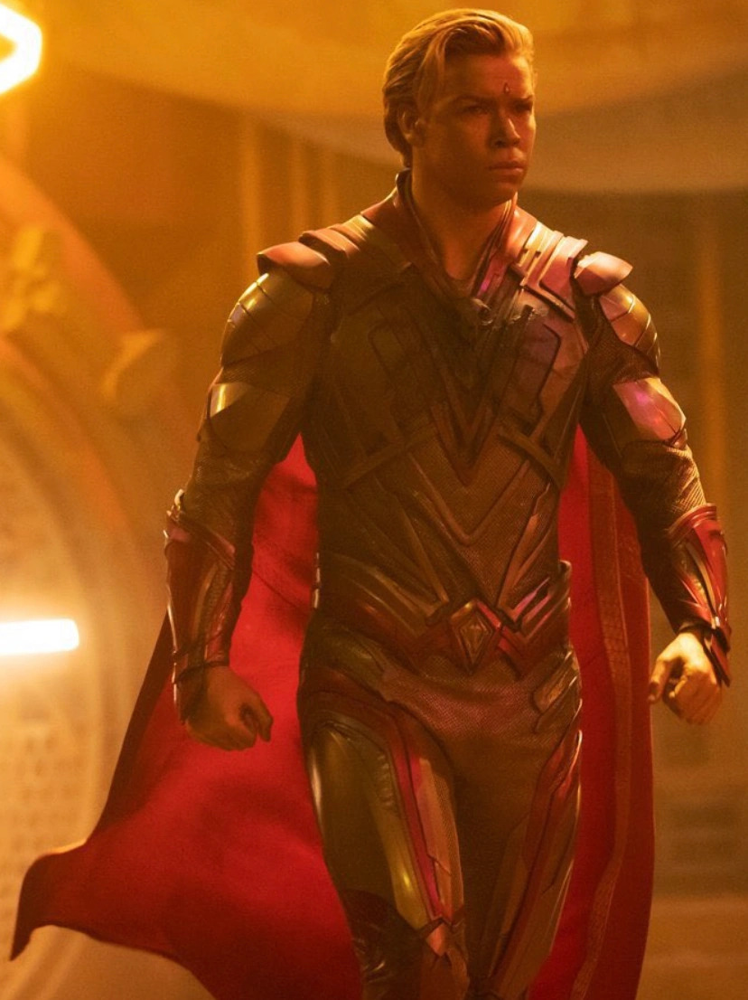
Origines :
Adam Warlock fut créé par le groupe de chercheurs se faisant appeler « l'Enclave ».
Leur objectif était de créer l'être humain parfait, l'apogée de l'évolution humaine future.
Heureusement pour les habitants de la Terre, ce nouvel être échappa au contrôle de ses créateurs.
La créature qu'ils avaient créée, connue uniquement sous le nom de « Lui », émergea et perçut immédiatement que ses créateurs cherchaient à l'utiliser à des fins maléfiques.
Il se déchaîna, endommageant le complexe et blessant ses pères, avant de s'enfuir.
Malheureusement pour lui, il était un être dépourvu de l'expérience de la vie en raison de sa conception unique.
Il rencontra rapidement Thor, et tenta d'enlever Dame Sif afin de s'unir à elle.
Thor, naturellement offensé par cet enlèvement, se jeta sur Lui et le roua de coups, le laissant aux portes de la mort.
« Lui » se réfugia alors dans un cocon régénérateur afin de renaître plus tard.
A sa renaissance, « Lui » fut rebaptisé Warlock par le Maître de l'Évolution, qui devint une figure paternelle dans la vie du jeune dieu renaissant.
Le Maître de l'Évolution lui offrit un but, une direction ainsi que la Gemme de l'Âme.
Peu après, Warlock se rendit sur la Contre-Terre, l'une des expériences du Maître de l'Évolution, récemment contaminée.
La Contre-Terre était une tentative de créer une société utopique, mais cela échoua lorsque l'Homme-Bête, une création renégate du Maître de l'Évolution, la corrompe.
Cet Homme-Bête allait devenir le premier ennemi de Warlock.
Warlock fit la rencontre de quatre adolescents : David Carter, Jason Grey, Eddie Roberts et Ellie Roberts.
Ellie lui donna le nom d' « Adam », en référence au personnage biblique, en pensant qu'il lui fallait deux noms au lieu d'un, comme c'était le cas sur leur planète.
Après l'arrivée de Warlock, Kohbra le localisa pour le compte de l'Homme-Bête et envoya Rhodan à sa recherche.
Le Sorcier affronta Rhodan et parvint à lui rendre sa forme originelle de simple animal.
Warlock fut ensuite fait prisonnier et contraint de rejoindre l'Homme-Bête sous peine de mort, mais il déclara qu'il ne se rallierait jamais à sa cause.
L'Homme-Bête tenta alors de faire croire au Sorcier que ses quatre amis l'avaient trahi, mais cette ruse se retourna contre lui lorsque Warlock, fou de rage, la vainquit.
Après ces événements, Warlock devint le premier super-héros de la Contre-Terre, et parcourut ce monde avec ses amis dans le but d'éradiquer toute trace de la présence maléfique de l'Homme-Bête.
Quelques temps plus tard, Warlock entra en contact avec un être maléfique connu sous le nom de Magus, une incarnation future et perverse de lui-même, totalement folle et d'une puissance terrifiante.
A la tête de l'Église Universelle de la Vérité, le Magus avait opprimé des milliards d'êtres vivants à travers le cosmos.
Warlock affronta le Magus, mais ne put y parvenir seul, car son double du futur possédait une force bien supérieure à la sienne.
Finalement, avec l'aide de Pip le Troll, de Gamora et du sinistre Thanos de Titan, Warlock parvint à éliminer la ligne temporelle d'où provenait le Magus, annulant ainsi son existence rétroactivement à travers le temps.
Puis, dans une riposte ingénieuse, Thanos projeta Warlock deux ans dans le futur, où il rencontra son double mourant, amer, se préparant à donner naissance au Magus.
Warlock recueillit alors l'âme de son double dans la Gemme de l'Âme, mettant ainsi fin à la menace que représentait son homologue maléfique.
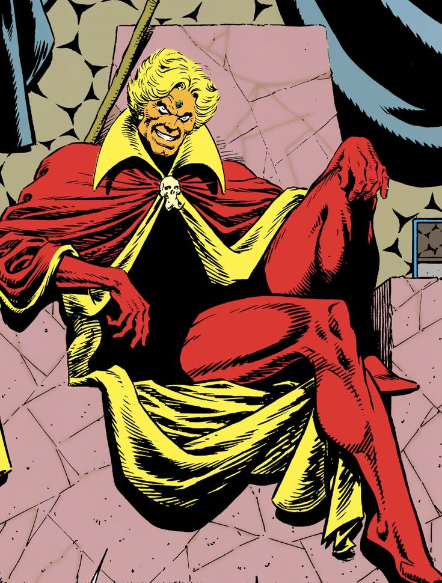
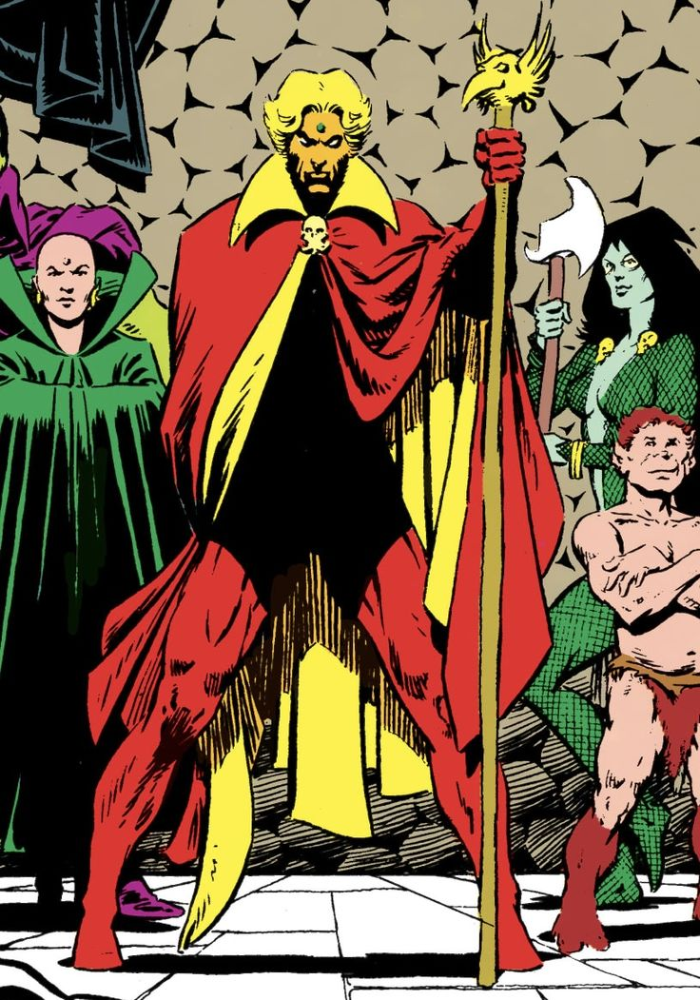
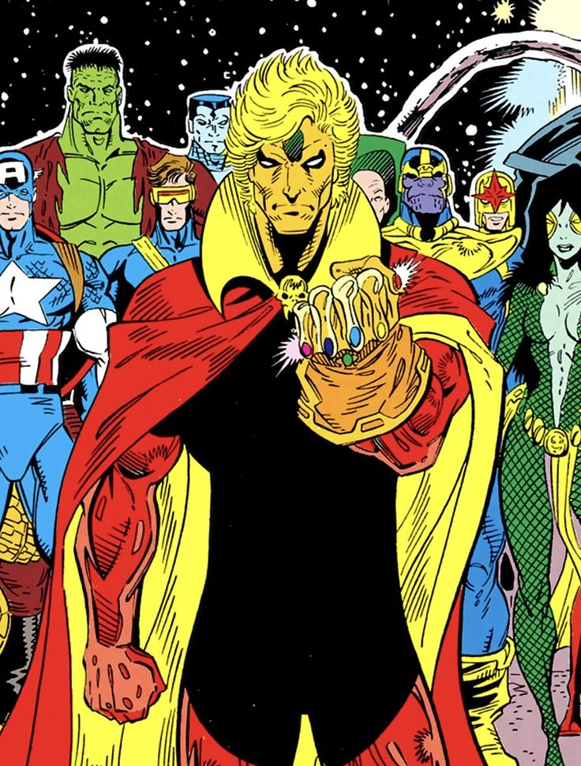

.jpg)
.jpg)
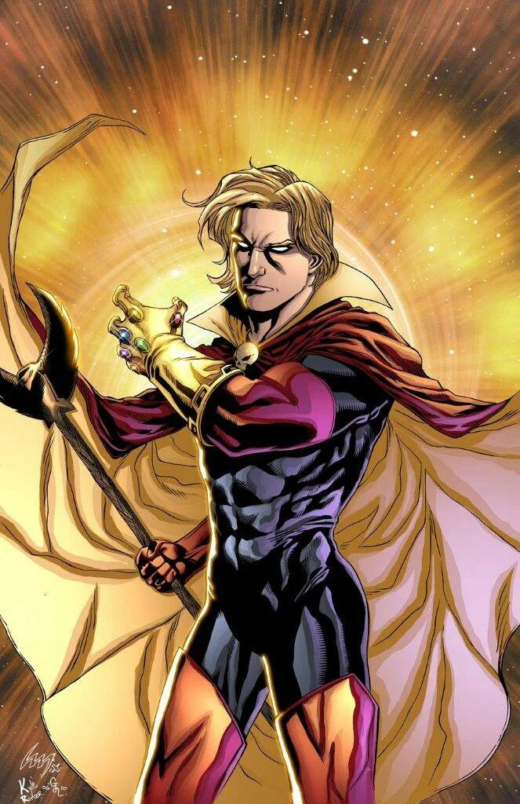
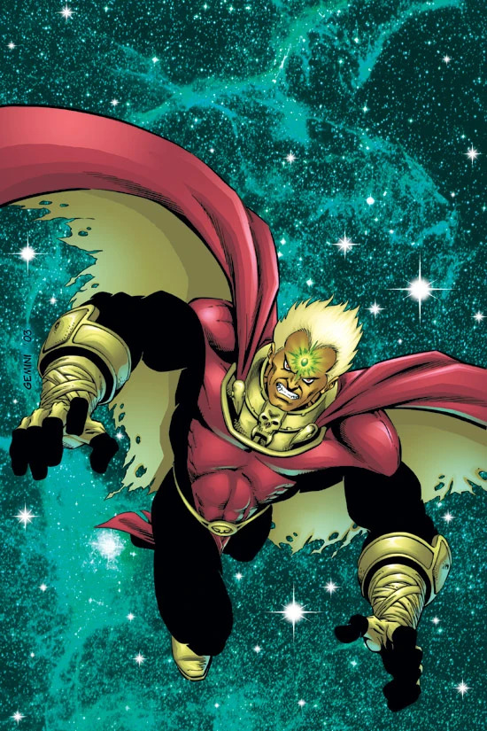
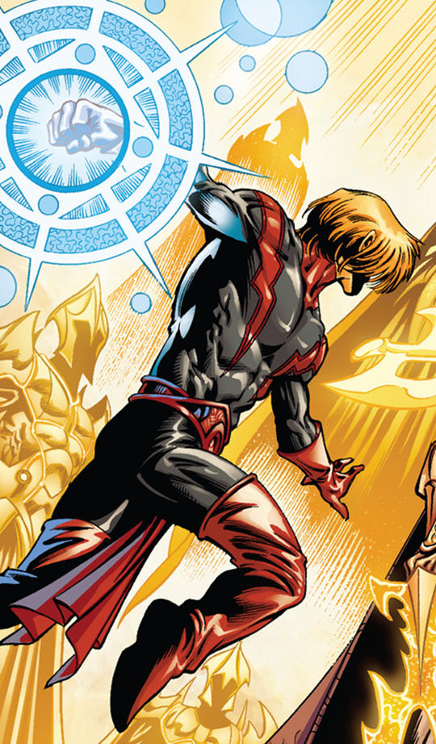
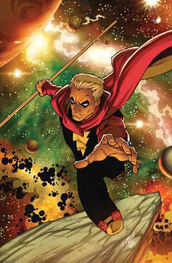
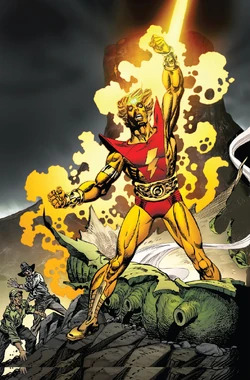
Personnalité :
Adam Warlock est un être possédant une grande intelligence et une compréhension particulièrement profonde des réalités cosmiques.
Il préfère généralement analyser une situation avant d'agir.
Il possède un fort sens du bien et du mal, et cherche régulièrement à protéger les êtres vivants et à défendre leur liberté, même si sa conception de la justice peut parfois être très personnelle.
Il est indépendant, et n'aime pas être contrôlé ou utilisé par d'autres. Ayant lui-même été créé artificiellement et manipulé à plusieurs reprises, il accorde une grande importance à la liberté et à l'autodétermination.
Capacités :
Adam Warlock possède une force largement supérieure à celle d'un humain et est capable de l'augmenter drastiquement en canalisant son énergie cosmique.
Sa vitesse de déplacements et ses réflexes sont surhumains : il peut réagir à des attaques extrêmement rapides et réaliser des mouvements impossibles pour un humain.
Il possède une endurance ainsi qu'une résistance hors-du-commun, et est capable de résister à de puissants impacts, aux températures et aux pressions extrêmes, ainsi qu'aux explosions énergétiques et au vide spatial.
Il peut voler en manipulant l'énergie cosmique, en annulant notamment les effets de la gravité.
Il peut atteindre des vitesses supersoniques dans une atmosphère, et des vitesses supraluminiques dans l'espace.
Son pouvoir principal est la manipulation de l'énergie.
Adam peut absorber, canaliser et manipuler différentes formes d'énergies, et il est ainsi capable de projeter des puissantes décharges d'énergie, de concentrer cette énergie dans des attaques offensives, de perturber ou neutraliser l'énergie utilisée par d'autres êtres, de l'utiliser pour augmenter ses propres capacités physiques ou encore de se soigner avec.
Malgré l'origine scientifique de Warlock, il possède également de véritables capacités liées aux énergies mystiques.
Il est capable de pratiquer divers sorts magiques, d'effectuer des exorcismes, de réaliser des transmutations, de projeter de l'énergie mystique, d'effectuer des projections astrales, de créer des portails et même d'agir directement sur les âmes.

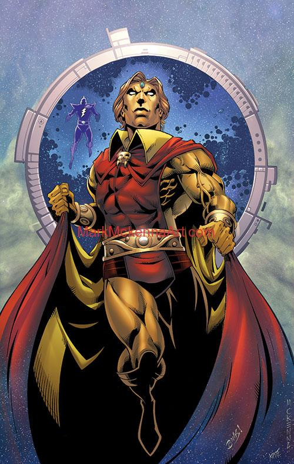
Costume :
Adam Warlock possède l'apparence d'un homme adulte, au physique athlétique et musclé, avec une peau et des cheveux dorés.
Ses yeux sont généralement représentés entièrement blancs, sans iris ni pupilles visibles.
Son costume classique est principalement composé d'une combinaison moulante rouge, accompagnée de différents éléments jaunes ou dorés au niveau du col, des gants, de la ceinture et des bottes.
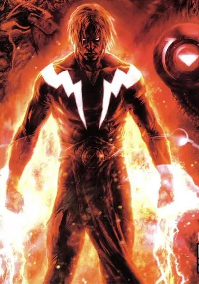
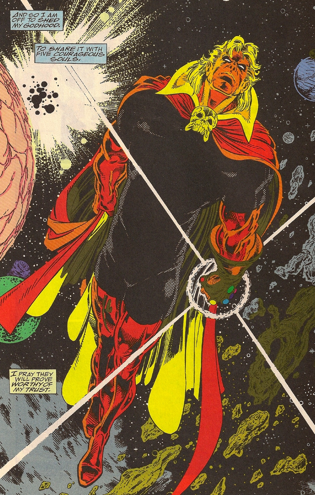
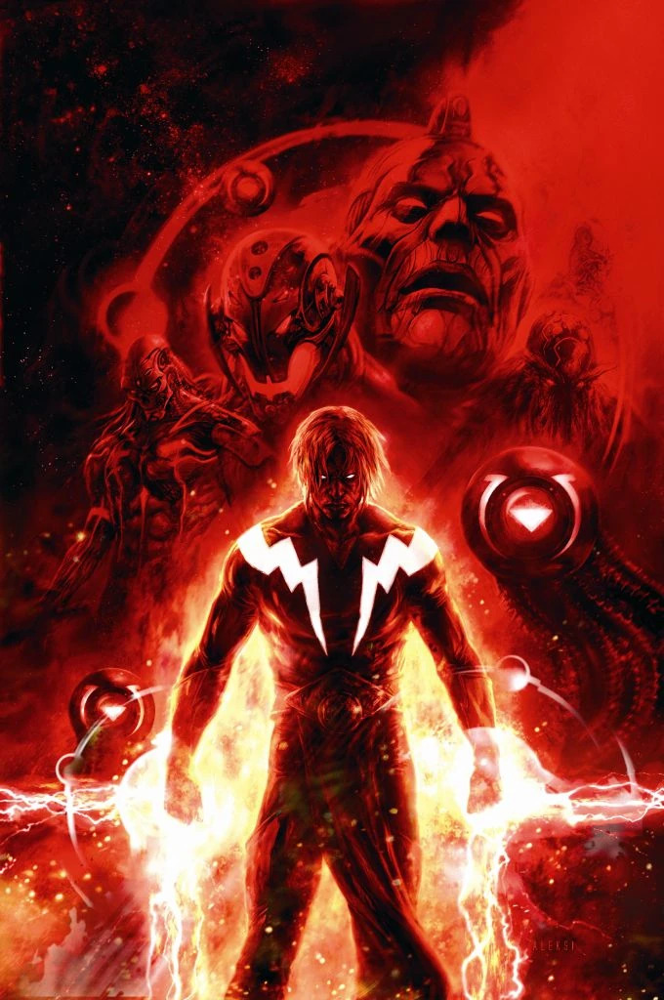
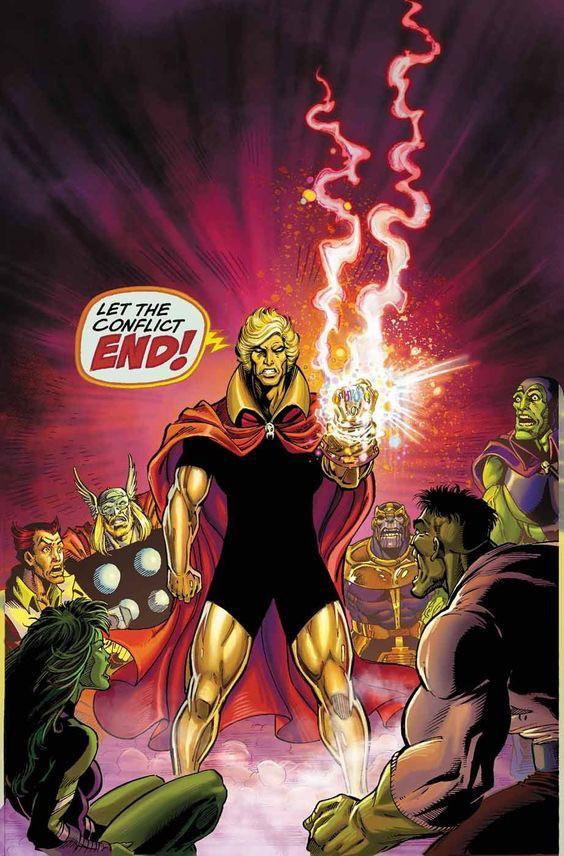
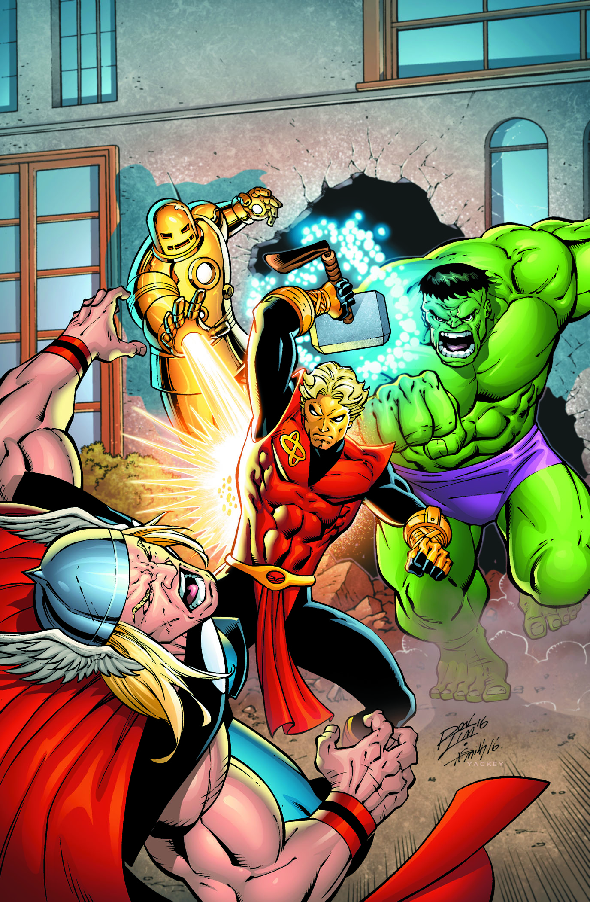
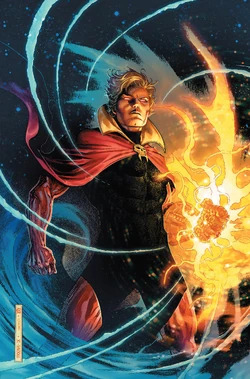
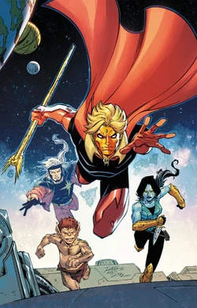
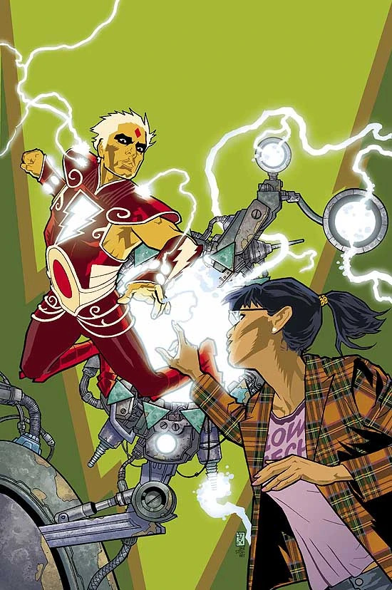
Les principaux ennemis d'Adam Warlock
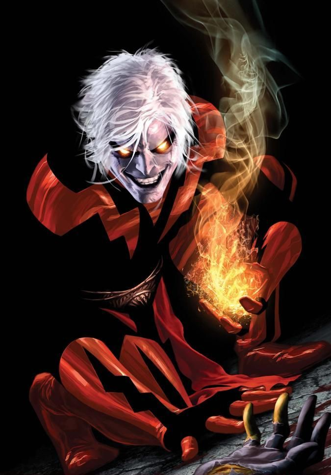

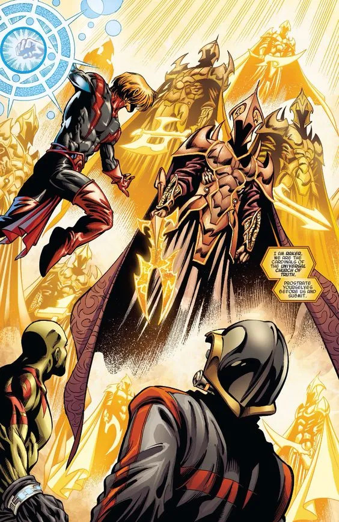
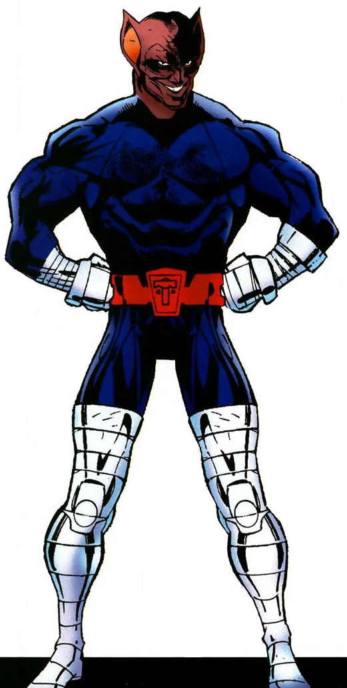
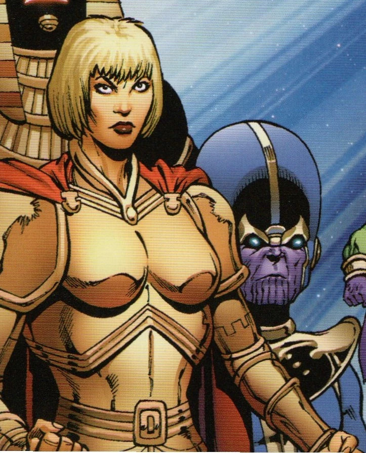

Équipes affiliées